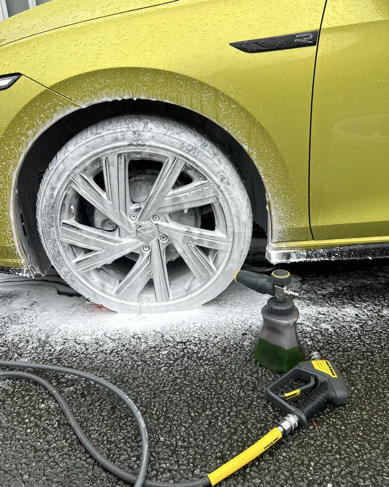
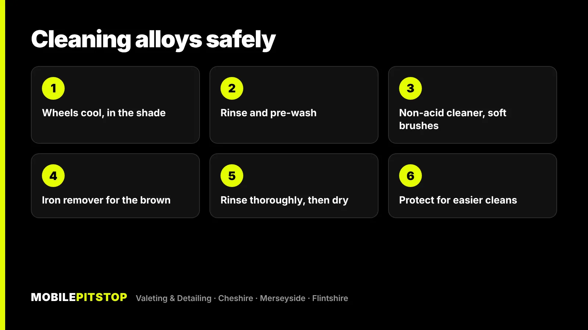
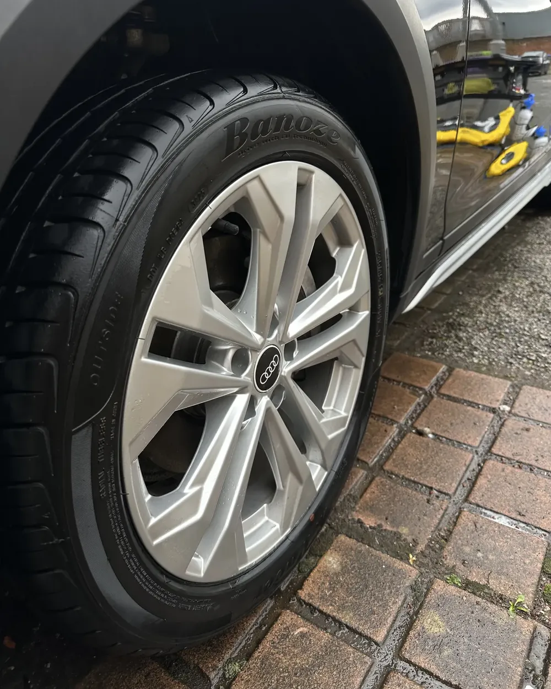

Brake dust comes off alloys safely with a non-acid wheel cleaner, soft brushes and plenty of water, followed by an iron fallout remover for the brown staining that a normal wash leaves behind. Work on cool wheels, keep separate brushes and a separate bucket for the wheels, and rinse well.
What you want to avoid is the quick fix: a strong acid cleaner sprayed on hot wheels and left to dry, or a stiff brush scrubbed across the face. Both can do more harm to the wheel's finish than the dirt ever did.
Below is why alloys go brown in the first place, how to clean them at home, and what we do on our jobs.
Why your alloys go brown
Every time you brake, the pads grind against the steel discs. That wears off a fine dust made of pad material and tiny particles of iron from the discs. The dust is thrown out onto the wheels while it's still hot, and some of it sticks to the surface rather than just sitting on it.
The iron is the part that causes the trouble. Once it's on the wheel and gets wet, it starts to rust, which is why a silver alloy turns grey, then brown, then orange-speckled. A quick rinse moves the loose dust but leaves those bonded iron particles behind.
A few things make it worse:
Front wheels. The front brakes do most of the work, so the front alloys almost always look worse than the rears.
Wet months. Rain, puddles and road salt keep the iron damp, so it oxidises faster. From November onwards, roads around the Wirral and Chester are wet and salted for weeks at a time.
Time. Fresh dust is easy to lift. Dust that's been baked on and rained on for months is much harder to shift.

Pre-wash foam on a wheel and arch, so loose dust lifts before a brush touches the surface.
Why strong acid wheel cleaners are risky
Acid-based wheel cleaners work fast, which is why they're popular, but they don't care what they're dissolving. Used wrongly, they can:
Stain or dull the finish. Polished, diamond-cut and chrome wheels are especially sensitive, and the marks don't wash off.
Attack damaged lacquer. Most alloys have a clear protective layer. Where kerb damage or stone chips have broken it, an acid can get underneath and make corrosion spread.
Dry on and mark. On a warm wheel, any strong cleaner can dry before you rinse it, leaving marks.
There's no need to take that risk. A non-acid (pH-balanced) wheel cleaner with good brushes does the job on regular dirt, and an iron fallout remover deals with the bonded brown dust without scrubbing hard. It's slower, but it's safe on almost any finish.
How to clean brake dust off alloys at home
This is the safe routine for a normal driveway clean. Always read the label of whichever products you use, and test on a small area first if your wheels are polished, diamond-cut or painted.
Start with cool wheels, out of direct sun. If you've just driven, give the wheels time to cool down. Cleaner sprayed on a hot wheel dries too quickly and can mark.
Use a separate bucket and separate brushes for the wheels. Wheels carry the heaviest grit on the car. Never let the wheel brush or wheel mitt anywhere near the paint.
Rinse first. A thorough rinse, or a pre-wash foam if you have a foam lance, lifts the loose dust so you're not dragging it around with a brush.
Apply a non-acid wheel cleaner and agitate. Use a soft-bristled brush for the face, a long barrel brush for the inside of the rim, and a small detailing brush around the wheel nuts. The barrel is where most of the dust collects.
Use an iron fallout remover for the brown that's left. Spray it on, give it the time the label says, and watch it react with the iron. Most turn purple as they work. Keep it wet; don't let it dry on.
Rinse thoroughly, then dry. Rinse into the barrels and around the nuts, then dry with a microfibre towel you keep just for wheels, so you don't leave water spots.
Protect them. A wheel sealant makes the next clean far easier, because fresh brake dust can't bond as well to a protected surface.

When DIY stops working
If you've done all of the above and the wheel is still brown, rough or blotchy, look closely. Brown that sits under the clear lacquer, bubbling or white powdery patches, or kerb rash with bare metal showing are not dirt. That's corrosion or damage to the wheel itself, and no cleaner will fix it. It needs a wheel refurbisher.
If you're not sure which it is, send us a few photos in daylight and we'll tell you straight whether a clean will fix it, so you don't pay for one that can't give you the result you want.
How we clean wheels on our jobs
On a Maintenance Wash, wheels, tyres and arches are cleaned as part of every visit, which is the easiest way to stop brake dust building up in the first place.
When wheels are already heavily stained, an Exterior Detail goes further:
A snow foam pre-wash over the wheels, arches and paint, so loose dirt lifts before anything touches the surface.
Wheels, tyres and arches deep cleaned, faces and barrels.
Chemical decontamination of tar, iron fallout and road film. Brake dust doesn't only land on the wheels; it settles on the lower doors and sills too.
A two-bucket hand wash of the paint, kept separate from the wheel kit.
Hand dried, with water traps cleared, and protection applied to finish.
If the whole car needs a reset, inside and out, the In & Out Deep Clean includes everything in the Exterior Detail as well as a full interior clean.

An Audi alloy and tyre after cleaning, faces and spokes clear of dust.
Keeping alloys clean through winter
The trick is not letting brake dust sit for weeks. A few habits make a big difference:
Clean the wheels every time you wash the car, and do them first, so dirty splashes don't land on clean paint.
Use an iron remover every so often, rather than waiting for the wheels to turn brown.
Protect them before the wet months. A sealed wheel rinses clean much more easily. Our guide to protecting your car's paint before winter covers the rest of the car.
Don't forget the barrels. If you only ever clean the faces, the dust builds up behind the spokes, where it's harder to reach and shows through.
If your wheels are past a quick wash, send us a few photos in daylight and we'll tell you straight which service the car needs, including when a cheaper one will do.